Specification of Each Driver
Specification Of Each Driver
A. Disposition of Driver
(1) Tendency of accident free driver
- •
Drive carefully
Make effort to respond well to the changes of road or traffic environment. When making the direction or lane change, always inform with signal light or hand signal, and when driving at night in particular, do not only drive depending on the indications of the traffic light, but also consider the fact that there are people who violate the laws and regulations, speeding and jaywalking
- • Do not undertake anything that interferes with driving
While driving, knowing the fact that in case when the driver is in negligence of focusing the front view by unnecessary actions such as looking elsewhere can lead to major accident thus it is best not to do anything that reduces attention span such as use of mobile phone, smoking, watching TV and talking.
- • Restraint the impulsive act and control yourself
Always have the awareness of speeding and passing is dangerous and drive with care. Acknowledge the misery of the accident and do not rush, get upset or be excited while driving.
[Do not undertake anything that interferes with driving for the accident free driving]
(2) Tendency of prone to accident drivers
- •Self-centered
Thoroughly critical on the matters inconsistent to his own opinion. They tend to think that they violation of signal or passing is inevitable while other drivers commit such action, it is intentional and habitual behavior.
- • Significant fluctuation of emotion
Severely temperamental. Small things make him edge and take action as wish without considering the consequences and has the tendency to ignore the traffic laws and regulations and drive recklessly.
- • Aggressive
When he is angry, take whatever the action available. Driver gets upset when other driver passes him and even when the car in the front drives under the speed limit, he make the other driver nervous by tailgating with high beam on or honking.
[The aggressive drivers have higher tendency to be in the frequent accident driver]
- •Hysterical
Easy to get mad and easy to get excited over minor things. He has hard time tolerating the traffic jam and when traffic does not move immediately after change of traffic light, he would honk and urge other driver to move forward.
- •Lack in self-control
Whatever was on his mind can not be reserved. For example, if passing the car was on mind, he does it no matter what the risk is. Knowing the fact that traffic laws and regulations has to be abided, he/she is quick to follow when other cars commit violation and think certain level of violation is inevitable depend on the situation.
- •Lack of consideration for others
Consider his position only and not about the others. He would not slow down for pedestrian but to use the horn to forcefully move them out of the way or refuse allow others to cut in on the merged area.
[When you recognize the rushing mode while driving, self-restraint will take over]
(3) Attitude for safe driving
- •Restrain the mind from rushing mode People tend to hurry things even when driving without time constraint. You need to immediately recognize the fact that ‘rushing mode’ come in when you are upset or angry while you are driving.
- •Relax and drive There is always the rushing mind or wrong action of driver behind the scene of accident. After you are already in the rushing mode it is hard to recover the relaxed mind thus, you should not create the situation to be in the rushing mode in the first place.
[Relaxed driving eliminate risky situation]
B. Elderly driver and Safe driving
(1) Characteristics of elderly drivers
- •Takes longer to apply the brake
Elderly drivers should always maintain safe distance with the car in the front because it takes longer time to react to the danger. Also reduce the speed and prepare for sudden danger if possible.
- • When fatigue, the vision is drastically weakens
Avoid long distance trip if possible and take frequent rest for long distance driving.
- •Takes longer to focus the vision
Maintain safe distance by reducing the speed because there may be delay in the risk detection and takes longer to look into the rear view mirror.
- •Risk anticipation capability is declined
An elderly have high risk of involve in accident in a sudden danger situation due to panic, the best policy is reducing the speed.
(2) Consideration for elderly driver
With the prolonged average life span, and longer survival period after the retirement, elderly driver became a part of ordinary feature on the road and became a reality that is not totally irrelevant to my family but with myself as well. Rather than hurl stream of profanity at slow moving vehicle or hesitant driver when you come across with by taking advantage for being anonymous, think of elderly as if they can be your parents or even yourself someday and courteous attitude is in order.
C. Safe Driving following the Major Traffic Laws and Regulations
(1) Compliance with signal and safe passing of intersection
All cars must follow the instruction of signal or traffic safety sign, police officer on traffic duty, and other officials. At this time, signal and instruction by the police officer take the priority. Among the regulatory sign of the safety signs, violations apply only 12 safety signs in conjunction which are street closed sign, do not enter sign and stop sign.
[The hand signal of police officer is required for responding to diverse traffic situations]
| Proceed | Left turn | Right turn | Stop |
|---|
[Table for major regulatory signs ]
| 201 | 202 | 203 | 204 | 205 | 206 |
| 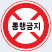 | 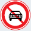 | 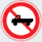 | 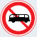 | 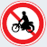 | 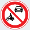 |
| Road Closed | No passenger cars | No Cargo Vehicles | No buses | No Motorcycles | No
passenger Cars/Motocycle |
| 207 | 208 | 209 | 210 | 211 | 217 |
| 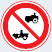 | 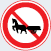 | 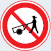 | 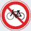 | 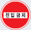 | 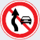 |
| No
tractors/ cultivatiors |
No Animal Drawn Vehicles |
No Hand carts | No Bicycles | Do Not Enter | Do Not pass |
[Types and meanings of vehicle signal ]
| By Signal | Contents |
| Green Light | • A carriage may
go straight and make slow right turn without interfering the
traffic. • At a place with non-protected left turn, make left turn when not interfering with the other traffic following the signal. However, when interfered with other traffic, it may be liable for traffic violation. |
| Yellow light | • A carriage may
make right turn, and to make the right turn, it may not
interfere the crossing of pedestrian. • When there is a stop line or pedestrian crossing road, carriage shall stop before the intersection, and if entered into the intersection, promptly proceed out of the intersection. |
| Red light | • A carriage has
to stop before the stop line or pedestrian crossing road or
before the intersection. • A carriage may make the right turn without interfering the side traffic moving straight. |
| Green arrow | • A carriage may proceed to the arrow direction. |
| Flashing red light |
• When there is a stop line or pedestrian crossing road, carriage shall stop before the intersection, and proceed forward with paying attention to other traffic. |
| Flashing yellow light |
• A carriage cannot proceed with paying attention to other traffic. |
| Red × mark Light |
• A carriage cannot proceed with the designed lane with × mark. |
| Flashing red × mark |
• A carriage can not enter into the lane with × mark and if entered, promptly change the lane |
(2) Method of drive over on intersection
- • The traffic signal is to prevent the accident by maintain smooth traffic flow thus it is most important to precisely understand the signal.
- •Maintain plenty of safe distance around the intersection area and observe the situation with the 2~3 cars in the front.
- •Make sure it is completely safe before you start moving even with the green light and always consider that there may be a car or a pedestrian might suddenly appear without observing the signal.
- •When approaching intersection, enter to the location with the clear view of the signal, and maintain sufficient distance from large cars due to blocked view of signal.
- •When turning, the rear wheels turn further inside than the front wheels. When making right turn in particular, care is required not to have a bicycle or pedestrian hit by the rear wheel.
- •After learning the lane direction of destination before hand, pass slowly and prepare to signal and be aware of other traffic and not to interfere with other cars.
[When making right turn at the intersection, be aware of the bicycle or pedestrian on the right.]
- • Even for green light, do not enter if the traffic is congested and you might end up stop within the intersection.
- •When the light is turned to yellow, if you step on the brake too quickly without considering the car behind or too rush to pass can result in accident, thus you might prepare for change of light by reducing the speed when you are approaching the intersection.
- •Yellow light after the green light means the ‘beginning of red light’ rather than the ‘extension of green light’.
- •While the traffic is not cleared, or unable to confirm, momentarily stop at the intersection and check the safety.
[When approaching to the intersection, reduce the speed to respond to the change of signal]
[The right-of-way at the intersection should observed where there is no traffic light]
(3) Right-of-way at the intersection where the traffic is not cleared
- ① Car with the all-time right-of-way with emergency car and others
- ② Car entered first into the intersection
- ③ Car entering from the broader road
- ④ Car entered from the right side of the road
- ⑤ For making left turn: Straight oncoming car or car turing right
- ⑥ For going straight or right turn: Car already making left turn
- ⑦ Temporarily stopped or the car which is on the side without the yield sign
| Traffic consultation office | |
| At the T-shaped intersection without the left turn signal, I made the left turn with red light and was ticketed. The walking sign was on with the red light, and the cars on the opposite sides are all stopped, and why was this a violation? | |
| The red signal is the signal for stop or right turn thus making left turn is in violation of the signal. However, the left turn can be made if there is a separate sign to make the left turn at the time of red light. | |
| At the intersection with unprotected left turn sign, I made the left turn with red light and was ticketed. Which violation does it fall under? | |
| The unprotected left turn should be made with the green light and not to be interfere with the opposite traffic. If interfered with the opposite traffic or made the left turn on other signals, it is the signal violation. | |
| In the event of accident with personal injury by mutual signal violation, how will the penalty point be given? | |
| In the event of accident for signal violation on both parties, the penalty on personal injury is applied to the driver with more serious violation to cause the accident. | |
(4) Status of Vehicle vs. Pedestrian
[Status of each accident type for pedestrian in 2010 / Unit : person, %]
| Classification | Total | While Crossing | While Passing on Road |
While Passing on Roadside |
While Passing on Sidewalk |
Others |
|---|---|---|---|---|---|---|
| Persons killed | 2,010 (100.0%) |
1,063 (52.9%) |
263 (13.1%) |
145 (7.2%) |
83 (4.1%) |
456 (22.7%) |
| Persons Injuried | 50,396 (100.0%) |
22,082 (43.8%) |
5,590 (11.1%) |
4,365 (8.7%) |
3,069 (6.1%) |
15,290 (30.3%) |
(5) General characteristics of behavior for pedestrian
- •They do not think that the driver might not be able to see them.
- •They assume that the drivers will reduce the speed or avoid to hit them.
- •They frequently cross the road carelessly when there is less traffic of cars or congested.
- •There are cases they jump in to the road where the speed of approaching car was unable to determine.
- •They may not fully understand that a car needs stopping distance to in order to stop.
[Children do not think of danger when they have a subject of interest]
(6) General characteristics of behavior for children
- •While child hold hands of parents but suddenly run into or cross the road. They think the headlight of the car would see them first.
- •They jump into the road thinking that cars would stop by raising their hands right in front of the car.
- •When children have subject of interest on the other side of the road, they may run toward it suddenly.
- •Jump into the road to catch the pet or ball while playing. When playing, children may not notice the close by.
[The pedestrians have the highest priority on road]
(7) Pedestrians have the highest priority on the road
- •Owner of the road is not the cars, it is the pedestrians. Always have the attitude to protect them as if they are the members of your own family.
- •Pedestrian's actions are not as prompt as the driver would expect, thus it is best to slow down when they appear.
- •When a pedestrian is crossing the cross walk, stop at the stop line for not to interfere or threaten the pedestrian.
- •Even in the event of proceeding along the vehicle signal, it shall not be interfered with pedestrian who crossing the cross walk.
- •Do not interfere when pedestrian is crossing the crosswalk or nearby road with no traffic light or crossing signal.
- •Pass slowly with the safe distance when passing pedestrians in the narrow street without the driveway and when pedestrians are in the safe area installed on the driveway.
- •When small children crossing the intersection or playing in alley without the parent's supervision, or when the visually impaired or other disabled crossing the road, take appropriate action for safety or stop.
- •Be aware that sometimes the disabled person may cross under the overpass or over and on the underground.
- •Be cautious when the two way street has frequent passing of pedestrians and children may running out of the space between the parked cars.
[When entering and exiting the gas station or parking lot, stop first and do not interfere with the pedest rian.]
| Traffic consultation office | |
| When there is an accident while driving on the sidewalk within the vehicle access permitted area, how will it be disposed? | |
| If accident arises on the sidewalk permitted for vehicle access, by Article 3 paragraph (2), clause(ix) (Road Encroachment Accident) under the Special Act on Traffic Accident Processing for 'interfering with pedestrian crossing while driving on the sidewalk' and be accounted for criminal punishment. | |
| What violation would it apply for car that collided with the passing motorcycle that was making right turn under the crosswalk signal in green with the intersection signal in red? | |
| In the event that there is no vehicle signal on the cross road and has the vehicle signal on the intersection, all cars are under obligation to stop before the crossing road. Therefore, when collided with a motorcycle crossing the cross road on pedestrian signal (green), it is applicable for the traffic violation. | |
| An accident occurred when there was no distance between the cars and rear ended the front car and the impact caused to push the front car to hit the pedestrian crossing the cross way pedestrian road for 10 weeks of treatment. What kind of punishment will be rendered and should the stipulation be reached? | |
| This accident is processed as the accident within the pedestrian crosswalk. Under the Special Act on Traffic Accident Processing for safety including slow down on the pedestrian crosswalk, regardless of subscription to insurance or agreement with victim, it is subject of criminal punishment (imprisonment, penalty) and the offending driver is subject of license revocation or suspension depending on the outcome of the accident. Stipulation is a mitigating circumstances for criminal prosecution to effect on the sentencing. | |
(8) Implication of centerline
- •A carriage can not cross over the yellow solid line.
- •The yellow dotted line can be crossed over to the opposite lane momentarily with careful observation of oncoming traffic, and must be back on the proceeding direction lane.
- •When is combination of solid yellow line and dotted line, the side with dotted line for carriage may cross over to the opposite traffic and back but no crossing is allowed on the side of solid line.
(9) Definition and standard of center lane violation
- •Center lane violation is the provision of Article 13 paragraph (3) of the Road Traffic Law as it describes “the driver of carriage has to drive on the right side from the center (it means the center in the event of having the centerline) of the road (vehicle road on the road classified with the pedestrian road and vehicle road).”
- •The yellow solid line of center lane prohibits the car to cross, the center lane violation includes the circumstances when any of the following crosses the center lane not only the wheels but also any part of the car and cargo products.
(10) Safe passing
- •Passing must be done on to the left side and estimate the time and distance needed for passing in advance. If the speed difference with the front car is minimum of 20km/h, it would be dangerous.
- •Passing over the yellow solid center lane is absolutely prohibited, due to the high risk of collision with the on-coming car.
- •Stop passing when the on-coming car approaches faster than expected.
[Passing is possible when the driver’s speed is at least 20km/h faster than the car in the front]
| Speed of the car (km/h) |
Speed of
car in front (km/h) |
Speed of
your car (km/h) |
Distance (m) | Required
minimum distance (m) |
Required
minimum time(sec) |
Remark | |
|---|---|---|---|---|---|---|---|
| Front | Back | ||||||
| 10 | 50 | 60 | 44 | 32 | 516 | 32 |
Inappr opriate |
| 60 | 70 | 58 | 44 | 784 | 40 | ||
| 90 | 100 | 112 | 93 | 2,150 | 77 | ||
| 20 | 50 | 70 | 58 | 32 | 350 | 18 | Appropriate |
| 60 | 80 | 76 | 44 | 520 | 23 | ||
(11) Method of safely helping the other car to pass
- •WWhen the car in the back attempts to pass, cooperate and slow down until it passes by. If he is interfered by accelerating, the risk of accident will increase.
- •WWhen the driver of passing car misjudged and there is an on-coming traffic appears check the safety situation in the back and reduced the speed for the passing car to get in easily.
- •WWhen a car parked on the edge of the street is about to start and merge into the traffic, it is safe to yield to merge to the flow of traffic.
[When the car in the back attempts to pass, cooperate and slow down]
(12) No passing situations
- •When a car in the front attempts to change the route to the left or pass other cars.
- •When another car is driving on the left side of the car in the front.
- •When there may be the possibility of interference in flow of on-coming cars. When the car behind attempts to pass your car.
- •When a car stops or slows down for intersection or cross road, when the car in front is following the order of police officer or stops or slows down for safe driving.
- •All cars are prohibited to pass the school bus with small children.
[Passing is prohibited when there is on-coming car from opposite direction.]
(13) Places of no passing
- •Intersection, inside the tunnel, above bridge
- •Curved road
- •Around the ridge of curved road or downhill of the steep hill
- •No Passing Zone designated by the commissioner of local police agency
No passing in tunnels]
| Traffic consultation office | |
| When detecting a risk under rainy day and tried to avoid it by sudden braking but skidded to cross the center lane and what is the disposition? | |
| In the event of crossing the center lane by skidding on the rainy day with the sudden braking to prevent the accident, it is not applicable to crossing the center lane. However, if speeding, it is applicable to encroachment of the center lane even when it is inevitable case. | |
| When the car behind did not have the safe distance and collided with the car in front and the car was pushed across the center lane to cause an accident, what law should it be applied? | |
| Under the Road Traffic Act, crossing of the center lane means to cross the center lane without a cause, and the car collided caused the accident by crossing the center lane would not be treated as crossing the center lane but is processed as unsecured safe distance. | |
| An accident occurred when there was no distance between the cars and rear ended the front car and the impact caused to push the front car to hit the pedestrian crossing the In the event that the front car yielded for passing in the place of no passing zone, can it pass? | |
| Article 22 (3) of the Road Traffic Act defines that, “drivers of all cars shall not pass the car in front in the following places.” And since it prohibits passing in certain areas that the following places prohibits the passing under Article 20 of the Road Traffic Act even with the yield. | |
(14) Legal speed
[Legal speed on general road]
| For each road | Speed limit |
|---|---|
| General road | 2-lane or more per direction → Max. of 80km/h |
| 2-lane or less per direction → Max. 60km/h | |
| Vehicle only road | Max. of 90km/h (Min. speed of 30km/h) |
- • Driving speed should be 20% reduced from maximum speed when the road surface is wet due to the rain, when snow accumulation of 20mm or less, and speed of wind is more than 15m and less than 20m per second.
- • Driving speed should be reduced 50% from the maximum speed when the visible distance is less than 100m due to heavy rain, snow or fog, when the surface is frozen, when snow accumulation of more than 20mm, and speed of the wind per second is 20m or more.
- • In the event that the maximum speed exceeds the designated speed by the facility structure of the road, depend on the region or the distance, the maximum speed is limited to be under the range of designated speed of the road.
- • Even when the maximum speed does not exceed the designed speed, maximum speed may be set differently for each zone if necessary in preventing the risk and traffic safety.
[When raining, the max. speed has to be reduced by 20%]
(15) Risk of speeding
- • Faster the speed, greater the impact in collision. While driving the difference of speed between 60km/h and 100km/h is 40km/h, however, when the traffic accident occurs, it would have the same impact as if it falls from 5-story building and 13-story building. In particular, the speed is proportion to the square, the impact force is four times for the speed of two times.
- • If the speed is faster, it takes longer to stop. With speed of 60km/h, approximately 35m is required and when it is 100km/h, approximately 77m is required to stop.
- • On the curved road, the vehicle may be turned over or swerve off the road by centrifugal force.
- • As the speed of car increases, the vision is declines and view range narrows down thus the spontaneous judgment decreases.
- • In the event of driving at high speed, when sudden handling or braking was applied the to car, it may lose the stability, turned over or swerved into the opposite lane.
[When colliding at high speed, the impact is much greater.]
(16) Speed and safe distance
- •All cars must secure sufficient space from the car in the front to avoid the collision in case when the car in the front makes sudden stop.
- •If stopped suddenly, it may seem as sudden brake, however consider the situation that there might be an accident thus you must secure the safe distance.
[The proper safe distance has to be maintained following the road situation.]
(17) Speed and stopping distance
- •When a driver applies the sudden brake, car does not stop immediately. The stopping distance is the combination of distance that a car traveled when driver maneuvered the brake to work (running distance) and from the travel distance since the application of the brake to stop (controlling distance).
- •Generally, it takes about 1 second for driver to apply the brake upon the recognition of the danger in the front, it can take longer depend on the characteristics of the driver (age, personality and physical and mental condition).
- •The stopping distance is 1.5 times on the rainy surface and 3 times or longer on slippery road. In addition, the control distance is lengthened in the event of vehicles with heavily loaded cargo.
[Even in a risky situation, car would proceed for running distance and control distance in order to stop.]
(18) Speed and stopping distance
- •When driving around the curve and handle was turned centrifugal force comes in effect. And when centrifugal force is greater than the frictional resistance of tire and the road surface, the car may slide to the side and swerve off the road.
- •Centrifugal force is proportioned to square of speed and has small radius of curve and is greater by the weight.
- •While driving in high speed it is best not to apply sudden brake or handle the steering wheel and sufficiently reduce speed before entering the curved road and reduce the centrifugal force.
[When centrifugal force exceeds centripetal force, car will swerve off the road]
(19) Speed and stopping distance
- •If is frequently seen the torn tire pieces on the expressway. When driving in high speed over certain speed, the rear part of tire touching the ground swell up and series of creases are created and this is called the ‘Standing Wave’. The general structure of tires on passenger car will have the standing wave around 150km/h of driving speed.
- •The standing wave of tire may occur as the air pressure gets low thus inspect the air pressure of the tire prior to high speed driving and it has to be 10~20% higher than standard air pressure.
- •The standing wave has the rubber on the tread part to scatter off and it makes the noise and hit the bottom plate of the car thus it is easy to detect.
[The standing wave occurs while driving in high speed that may damage the tire]
(20) Maintaining appropriate air pressure in tires
- •Risk in the event that the air pressure is inappropriate
-In the event of higher than appropriate air pressure: When suffered external impact with high air pressure, tire is easily punctured.
-In the event of lower than appropriate air pressure: While driving in high speed, abnormal rotation may occur and damage the tires, or when making fast turn, the tire may come off from the wheel. - • Standard of appropriate air pressure of tire
| Vehicle type | Dimension | PR | Standard air pressure | Remark | |
|---|---|---|---|---|---|
| Passenger car | 185 R 14 | 4 PR | 32~33 PSI | Recommended to increase 10% of air pressure when driving on expressway | |
| Bus | 11 R 22.5 | 16 PR | 120~130 PSI | ||
| Cargo vehicle | Small (2.5t or below) |
185 R 14 | 8 PR | 65 PSI | |
| Medium (2.5~8t) | 7 R 16 | 12 PR | 95 PSI | ||
| Large (8~11t) |
11 R 22.5 | 16 PR | 120~130 PSI | ||
ㆍPSI : Air pressure per each square inch of the tire (pound)
- •Caution at the time of measuring the air pressure
- In order to maintain the balance of the car, the difference of air pressure on the front and back tires has to be complied with.
- The air pressure is to be measured when the tire is in cold condition. When measuring under the hot condition, the temperature has to be considered to determine the air pressure.
- The cap for the air injection inlet blocks off the air leakage thus the cap has to be checked after measuring the air pressure and tightly lock it.
| Traffic consultation office | |
| While driving 90km/h in the area with the speed limit of 80㎞/h and cited by the auto speed measuring instrument. Isn't the violation applicable only when exceeding speed of 20㎞/h? | |
| The legal speed or speed limit applies for speed violation if driving under or over the speed. Up to the current speed for 20㎞/h, it has no penalty points but fine of ￦30,000 for passenger car and bus, ￦60,000 and 15 penalty points if exceeded for 20㎞/h, while the bus is applicable for ￦70,000. If exceeding 40㎞/h, it renders 30 penalty points with ￦90,000 per passenger car and ￦100,000 of fine for bus. If the driver is unidentifiable, the police station imposes the fine with the addition of ￦10,000 to the owner of the car without penalty points. | |
(21) Designated lanes other than the expressway
[Designated-lane on general road]
| Road | Lanes | Accessible vehicles |
|---|---|---|
| 4-lane per each way |
1st 2nd -lane |
passenger car, mid- to small passenger bus and cargo vehicle with the loaded weight of 1.5 tons or below |
| 3rd-lane | Large passenger bus, cargo vehicle with the loaded weight of 1.5 tons or over and construction machinery (Limited to dump truck and concrete mixer truck.) | |
| 4th-lane | special vehicle, motorcycle, motor bicycle, bicycle, carriage and construction machinery (Excluding the dump truck and concrete mixer truck.) | |
| 3-lane per each way |
1st-lane | passenger car, mid- to small passenger bus and cargo vehicle with the loaded weight of 1.5 tons or below |
| 2nd-lane | Large passenger bus, cargo vehicle with the loaded weight of 1.5 tons or over and construction machinery (Limited to dump truck and concrete mixer truck.) | |
| 3rd-lane | special vehicle, motorcycle, motor bicycle, bicycle, carriage and construction machinery (Excluding to dump truck and concrete mixer truck.) | |
| 2-lane per each way |
1st-lane | passenger car, mid- to small passenger bus and cargo vehicle with the loaded weight of 1.5 tons or below |
| 2nd-lane | Large passenger bus, cargo vehicle with the loaded weight of 1.5 tons or over, special vehicle, motorcycle, motor bicycle, bicycle, carriage and construction machinery |
(22) Bus-lane on general road
As a part of the policy to efficiently operate existing road rather than build new ones, bus-only lane policy which has the keynote in public transportation policy is in effect. Blue solid lane indicates for the commuting hours which consist of daytime commuting hours from 06:00~09:00 or 07:00~10:00 and evening commuting hours is 17:00~21:00. However, there are areas where operating times are different. Blue solid lanes are effective only in the morning commute hours and double blue lanes are operated from 07:00~15:00 on saturdays.
[Cars that have the access to the bus-lane(general road)]
- 1. Large passenger car with the capacity 36-person or more
- 2. Commercial passenger car with the capacity of less than 36-person
- 3. Commuting bus with the purpose of carrying children with the certificate of report
- 4. Car that is designated by the commissioner of regional police agency
- Passenger bus with capacity of 16 persons or more for commuting purposes in designated routes
- Passenger van recognized as needed for carrying the personnel in international events (Limited time only)
(23) Bus-lane on expressway
By holding back the use of passenger cars and granting the priority to the public transportation in bus, it is the policy to improve the transportation efficiency of the expressway, and it has been implemented simultaneously in both directions for a total distance of 137.4km from 283.9km (Sintanjin IC) to 421.3km (Seocho IC) starting from Busan in Gyeongbu Expressway in February 1995.
[Bus-lane time at Gyeongbu expressway]
| Classification | Transit Classification | Time |
|---|---|---|
| Saturdays (Implemented on Oct. 1, 2005) |
Both directions | 09:00~21:00 (12 hours) |
| - Sundays - National holidays (3/1, 7/17, 8/15, 10/3) - Holidays (1/1, 5/5, Buddha's Birthday, 6/6, 12/25) |
To Seoul To Busan |
09:00~23:00 (14 hours)
09:00~21:00 (12 hours) |
| New Year's Day and ChuSeok holidays (Including the consecutive holidays) | Both directions | From 12:00 day before the
holiday until 24:00 on the last day of holiday vacation |
(24) Types of lane violation
- • Drive on two lanes
- • Driving in zigzag motion on two lanes without staying on one lane
- • Suddenly change the lane to cut in to the next lane
- • Cut across several lanes consecutively
- • Change the route in a place where the lane change is specifically prohibited
[Crossing several lanes at once is also a lane violation.]
(25) Safe lane change
- • Lane change for turning, crossing, backing up, u-turn and others are made while securing the safe space and slow enter after checking for safety.
- •When changing lane, it is safe to send signal in the distance of 30 m or farther (100m or longer on expressway)to avoid the collision with the car behind.
- •When changing lane, hold back if there is possibility to interfere with the flow of cars on the lane that you are about to enter.
- •Lane change is made only on white dotted line or yellow dotted line on road and changing is not allowed on place with white solid line (inside the tunnel, near the intersection, steep uphill, etc.)
- •Follow the traffic signal, safety sign, or instruction of police officer, and do not cut in to other cars who are stopped or slowing down.
[When making the lane change on general road, signal has to be made in the distance of 30m or more.]
| Traffic consultation office | |
| I have received a citation for violating the bus lane regulation sometime ago. At the time when picture was shot, of taping, I was in the dotted bus lane to make the right turn (with the right turn sign on the road), and what was my the violation? | |
| The blue solid line of bus-lane indicates that the carriage cannot cross over it. The blue dotted line indicates the carriage that has access to bus lane can cross over but for the carriage that does not have access to bus lane can enter and exit on the road other than bus lane and from the very beginning of bus lane carriage can cross over to enter on the road other than bus lane. It is not a violation if right turn is made right away after entering into the dotted line of bus-lane and you may made an appeal at the Traffic Division of the District Office under relevant jurisdiction. | |
| While driving, I turned on the right signal to change the lane to the right from the left turn lane but was collided with the car that was coming from the back. Whose fault is it? | |
| In the event of changing the lane, the drivers of all cars shall not make lane change when there is a concern of having interference on normal operation of other cars (Article 19 paragraph (2) the Road Traffic Act). Therefore, when the car from the back collided with the car to make the lane change, the car making the sudden lane change will be the offending car. In addition, the intersection area is solid line zone where the lane change is prohibited. | |
(26) Standard of drunk driving
The ‘standard of intoxicated’ for prohibition of driving is 0.05% of the level of alcohol in blood, and the ‘condition of fully intoxicated’ is 0.1% or higher but it is safe not to drive at all under the influence of alcohol.
[When making the lane change on general road, signal has to be made in the distance of 30m or more.]
(27) Type of accident occurred during drunk driving
- •Drunk driving clearly decreases the alertness, decision capability and motor ability of the driver which makes driver unable to recognize the information and misjudge the traffic situation. In this case, the machine operation is omitted or make mistake.
- •Because of the headlight of the on-coming car at night, the vision is not quickly restored to original condition.
- •Regardless of the object movement, there is higher possibility for single party accident to occur such as colliding into the parked car, objects on the road, car in operation, pedestrian and others.
- •Many times the drunk driving and the unlicensed driving go hand-inhand.
- •The driver may be in fear of the consequences from the drunk driving and it can leads to the secondary crimes (A half of the hit-and-run drivers are drunken drivers).
- •The rate of casualty is high such as encroaching the center lane which result in fatal accident.
[The drinking and driving leads to the secondary crime of hit-and-run for the fear of punishment]
(28) Standard of punishment for drunk driving
[Standard of administrative disposition for driver’s license under the Road Traffic Act]
| Blood alcohol level | 0.05% ~ below 0.1% | 0.1% or more |
|---|---|---|
| Outcome | ||
| Personal injury accident | License revocation Criminal arrest | License revocation
(Criminal arrest) |
| Property damage
accident (Without accident) |
License suspension
for 100 days Criminal arrest | |
| Refusal of
measuring drinking level |
Criminal
arrest, license revocation (Possible to collect blood when refusing to take breathing test) | |
| * For
criminal arrest: Imprisonment of 2 years or less or fine in 5
million won or less [Standard of administrative disposition for driver's license under the Road Traffic Act] |
||
[Criteria for punishment for drunk driving for each level of alcohol in blood under the Prosecutor’s Office]
| Blood alcohol level | Simple drinking | With accident | Strengthened contents |
|---|---|---|---|
| 0.05%~0.09% | 100 Penalty points
(suspended for 100 days) Indict without detention (fine) |
1 year of license
revocation Indict without detention (arrest) |
-.Arrest
for offenders who were punished for 4 times or more in 5 years (Regardless of level of drinking) -. Arrest for offenders who are without the license and 0.10% B.A.L or more with for 3 times or more D.U.I in 5 years -.Arrest for offenders who were punished for 3 times or more in 3 years (Regardless of level of drinking) -.Arrest for offenders who drove while intoxicated while the license is suspended or revoked |
| 0.10%~0.15% | 1 year of license
revocation Indict without detention (fine) |
1 year of license
revocation Indict without detention (arrest) | |
| 0.16%~0.25% | 1 year of license revocation Indict without detention (fine) |
1 year of license
revocation Indict without detention (arrest) | |
| 0.26%~0.35% | 1 year of license
revocation Indict without detention (fine) |
1 year of license
revocation Indict without detention (arrest) | |
| 0.36% or more | 1 year of license
revocation arrest |
1 year of license revocation arrest | |
| Refusal for drinking test | 1 year of license revocation and fine, arrest | ||
| 3 times or more of
traffic accident with drunk driving |
3 years of license revocation | ||
| hit-and-run after personal injury accident from drunk driving |
5 years of license revocation | ||
(29) Compliance of drivers
- •Protect the vulnerable persons
When passing a puddle, be cautious not to have the splash of water to harm persons standing nearby. When a child is exposed to risk of traffic accident for instance, a child is crossing the road without guidance, sits or stands on the road, or playing around, when a blinded person crosses the road with white cane, when a disabled person who can not use the crossing facilities try to cross the road, the cars must stop.
- • Do not use the mobile phone while driving
Use of mobile phone while driving decreases the accuracy level of handle maneuvering, lengthens the reaction time in times of emergency, and is equivalent to driving with 0.1% of level of alcohol in blood.
While driving, when the car is stopped or driving an emergency car, and with the exception of in the event of emergency for reporting the crimes and disasters, the mobile phone shall not be used.
[Mobile phone use is prohibited except for emergency.]
- •Do not use the mobile phone while driving
Not only the driver has the duty to wear seatbelt but also has the responsibility to have the accompanied passengers to wear the seatbelt. For an infant, the protective device for infant has to be installed and then to wear the seat belt.
The seatbelt has significant effect to reduce the impact in traffic accident that it may avoid the critical injury or death. In addition, it restraints user from unnecessary action and brings correct posture for stability, and make the safe driving with less fatigue with broadened view.
[Scope of seat belt wearing obligation]
| Road Classification | Scope of Obligations |
|---|---|
| expressway and drive way | Driver and all passengers |
| general road | Driver and the passenger next to the driver |
(30) What is the Special Act on Traffic Accident Processing?
The Special Act on Traffic Accident Processing was enacted to protect the driver and the victim from the traffic accident arising while driving the car. This Act promptly and clearly classify and dispose the accident (death, hitand- run, injury accident with 10 special cases) that requires criminal liability regardless of insurance or stipulation and the ordinary accident for the people involved in accident to return to their ordinary living as soon as possible.
[Accident processing procedure following the Special Act on Traffic Accident Processing]
(31) Exception to the special case of punishment
[Death and hit-and-run]
[10 Categories of violation of important laws and regulations]
(32) Method of action taken when a traffic accident occurs
- • Remember the things to do by driver and passenger
In order not to interfere with flow of other cars, move the car to the edge of the road or empty space to prevent series of accidents.
Administer the possible first aid until the doctors and emergency rescue team arrive. While you are doing so, do not move the injured persons. In particular, do not move person when he/she is injured in the head. However, if there might be concern for another accident, move the injured persons to safe area and protect the injured persons.
The driver responsible for the accident has to report to the police officer for location of accident, number of injured, degree of injury, damaged property and others, and if there is no police officer present, report to the nearby police station.
[Take the emergency action at the accident site and wait for medical team.]
- • Method of action taken for victims and cooperation of surrounding persons
Even the slightest injury has to be informed to the police officer. If the victim neglects the report, it may not only be disadvantageous for post accident effect from the accident, and may not also be able to obtain the traffic accident report.
When there is strong impact on head or other parts without external injury, obtain the examination of doctor to avoid post accident effect.
When rescuing the injured person or moving the cars involed in accident, make sure to help each other and cooperate.
Take a note or remember all of the characteristics of the hit and run car such as license plate number, model, color and distinction, etc. and report to 112.
In particular, the accident site may have the gasoline or hazard materials spillage thus absolutely refrain from smoking or discarding the lighted match.
[Once the accident is witnessed, report immediately to 112.]
 Copyright © 2015 KoROAD. All rights Reserved.
Copyright © 2015 KoROAD. All rights Reserved.